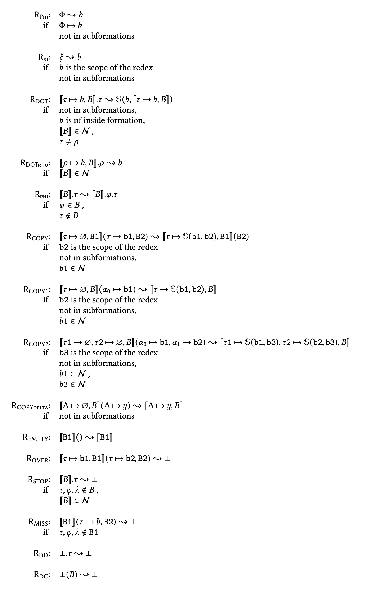
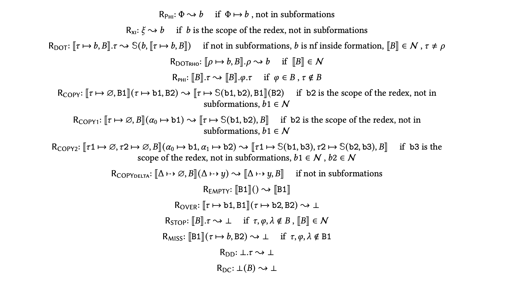

Normalizer for \( \varphi \)-calculus
Command line normalizer of \( \varphi \)-calculus expressions (as produced by the EO compiler).
Throughout the documentation, we refer to ùúë-calculus as PHI.
This project aims to apply term rewriting techniques to "simplify" an input PHI expression and prepare it for further optimization passes. The simplification procedure will be a form of partial evaluation and normalization (see eo-phi-normalizer rewrite and eo-phi-normalizer dataize).
Contrary to traditional normalization in λ-calculus, we aim at rewriting rules that would help reduce certain metrics of expressions (see eo-phi-normalizer metrics).
See the report on our current progress with metrics.
The eo-phi-normalizer package is available on Hackage.
The latest package Haddock documentation is available on our site.
Installation
Environment requirements
- OS:
Ubuntu 22.04ormacOS 12. stackis installable.eo-phi-normalizeris installable.
Install stack
See the official stack installation documentation.
Install eo-phi-normalizer
Install the eo-phi-normalizer executable globally via stack.
Then, the eo-phi-normalizer executable will be available on PATH.
Install eo-phi-normalizer from the repository
Clone and enter the project repository.
git clone https://github.com/objectionary/eo-phi-normalizer --recurse-submodules
cd eo-phi-normalizer
Install eo-phi-normalizer.
export LC_ALL=C.UTF-8
stack install eo-phi-normalizer
Install eo-phi-normalizer from Hackage
You can see all package versions on its Hackage page.
Use the necessary version in the stack install command.
stack update
export LC_ALL=C.UTF-8
stack install --resolver lts-22.16 eo-phi-normalizer-3.2.0
Update eo-phi-normalizer
Run stack install ... as in one of the methods above.
Uninstall eo-phi-normalizer
Learn where stack installs programs.
stack path --programs
Learn how to uninstall a program.
stack uninstall
Quick start
Clone and enter the project repository.
git clone https://github.com/objectionary/eo-phi-normalizer --recurse-submodules
cd eo-phi-normalizer
Install eo-phi-normalizer - see Installation.
Save a PHI program to a file.
cat > celsius.phi <<EOM
{
⟦
c ↦ Φ.org.eolang.float (
as-bytes ↦ 25.0
),
result ↦ ξ.c.times (
x ↦ 1.8
)
.plus (
x ↦ 32.0
),
λ ⤍ Package
⟧
}
EOM
Dataize the program recursively.
eo-phi-normalizer dataize \
--recursive \
--rules eo-phi-normalizer/test/eo/phi/rules/new.yaml \
--dependency-file 'eo-phi-normalizer/data/0.38.0/org/eolang/float.phi' \
--dependency-file 'eo-phi-normalizer/data/0.38.0/org/eolang/bytes.phi' \
celsius.phi
{
⟦
c ↦ Φ̇.float(
as-bytes ↦ 25.0
),
result ↦ ξ.c.times(
x ↦ 1.8
).plus(
x ↦ 32.0
),
λ ⤍ Package
⟧
}
Pipeline
Install stack
See the official stack installation documentation.
Enter the repository
Clone and enter the project repository.
git clone https://github.com/objectionary/eo-phi-normalizer --recurse-submodules
cd eo-phi-normalizer
Install eo-phi-normalizer
Install eo-phi-normalizer.
export LC_ALL=C.UTF-8
stack install eo-phi-normalizer
Install dependencies
Install yq.
yq --version
yq (https://github.com/mikefarah/yq/) version v4.44.1
Install NodeJS.
node --version
v20.18.0
Install Java.
java --version
openjdk 21.0.5 2024-10-15 LTS
OpenJDK Runtime Environment Zulu21.38+21-CRaC-CA (build 21.0.5+11-LTS)
OpenJDK 64-Bit Server VM Zulu21.38+21-CRaC-CA (build 21.0.5+11-LTS, mixed mode, sharing)
Windows
Install Cygwin.
Make cygpath available on PATH.
Learn about the pipeline
Pipeline stages
The pipeline has several important stages:
- Rewrite original
EOprograms into filteredEOprograms, leaving only the specified top-level objects (tests). - Translate filtered
EOprograms to initialPHIprograms. - Translate initial
PHIprograms to initialEOprograms. - Test initial
EOprograms. - Normalize initial
PHIprograms and get normalizedPHIprograms. - Report metrics on initial
PHIprograms and normalizedPHIprograms (See Metrics). - Translate normalized
PHIprograms to normalizedEOprograms. - Test normalized
EOprograms.
Pipeline configuration
The pipeline is configured via the pipeline/config.yaml file.
The configuration file specifies the following:
report- Pipeline report configuration.js- Optional path to aJavaScriptfile that should be inlined into theHTMLreport.- If no path is specified,
eo-phi-normalizerwill use report/main.js.
- If no path is specified,
css- Optional path to aCSSfile that should be inlined into theHTMLreport.- If no path is specified,
eo-phi-normalizerwill use report/styles.css.
- If no path is specified,
output- Where to write report versions.html- The file path of theHTMLversion.json- The file path of theJSONversion.markdown- The file path of theGitHub Flavored Markdownversion.
expected-metrics-change- The expected relative change in metrics w.r.t the initial metrics.dataless- For dataless formations.applications- For applications.formations- For formations.dispatches- For dispatches.
expected-improved-programs-percentage- Expected percentage of programs where all metrics changed as expected.
test-sets- A list of configurations for sets of test objects (tests).eo- The configuration of theEOpart of the test set.original- The file path of the originalEOprogram.enable- A flag to enable tests in the originalEOprogram.include- A list of names of tests in the originalEOprogram that should be included into the filteredEOprogram.exclude- A list of names of tests in the originalEOprogram that shouldn't be included into the filteredEOprogram.filtered- The file path of the filtered originalEOprogram.yaml- The file path of the originalEOprogram in theYAMLformat.
phi- The configuration of thePHIpart of the test set.initial- The file path of the initialPHIprogram.normalized- The file path of the normalizedPHIprogram.bindings-path-initial- The path to tests via bindings in the initialPHIprogram.bindings-path-normalized- The path to tests via bindings in the normalizedPHIprogram.
atoms- The configuration of atoms in the test set. The set of enabled atoms is the difference of sets constructed from theenableanddisablelists.enable- The list of names of atoms to enable. An empty list is equivalent to a list of all known atoms.disable- The list of names of atoms to disable.
Run the pipeline script
bash ./scripts/pipeline.sh
Explore the pipeline directory
The script will run for several minutes and write the following entries to the pipeline directory:
eo-filtered- FilteredEOprograms.eo-initial- InitialEOprograms..eoc/4-pull/org/eolang-org.eolangobjects (link).
eo-normalized- NormalizedEOprograms.eo-yaml- FilteredEOprograms in theYAMLformat.logs- Logs of some pipeline stages.phi-initial- InitialPHIprograms..eoc/phi/org/eolang-org.eolangobjects translated toPHI.
phi-normalized- NormalizedPHIprograms.report- Pipeline reports.report.html- The report in theHTMLformat.report.json- The report in theJSONformat.report.md- The report in theGitHub Flavored Markdownformat.
Metrics
PHI grammar

We count
Object formations
- Example:
⟦ d ↦ ∅, c ↦ ∅ ⟧
Object applications
- Example:
ξ.b(c ↦ ⟦ ⟧)
Dynamic dispatches
- Example:
ξ.ρ.c
Dataless formations
Definition: \( \Delta \)-depth
\( \Delta \)-depth of an object describes how deep data is in the object when recursively traversing values attached to the object attributes. That is, \( \Delta \)-depth is \( \infty \) for all objects except formations. More specifically:
- the \( \Delta \)-depth of a formation with bytes attached to a \( \Delta \)-attribute is \( 1 \);
- for a non-empty formation, the \( \Delta \)-depth is:
- \( 1 + M \), where \( M \) is the minimal depth among objects attached to attributes of this formation;
- \( \infty \) if there are no objects attached to attributes of this formation;
- otherwise, the \( \Delta \)-depth of an object is \( \infty \).
Definition: Dataless object
An object is dataless if its \( \Delta \)-depth is greater than 2.
Examples
The following table demonstrates objects with their \( \Delta \)-depths:

CLI command
See eo-phi-normalizer metrics.
Atoms
The eo-phi-normalizer uses atoms implemented in Haskell.
The sections below explain how to update them.
Enter the repository
Clone and enter the project repository.
git clone https://github.com/objectionary/eo-phi-normalizer --recurse-submodules
cd eo-phi-normalizer
Install stack
See the official stack installation documentation.
Update atom definitions
Edit definitions in the list knownAtomsList in the module eo-phi-normalizer/src/Language/EO/Phi/Dataize/Atoms.hs.
Test
Run tests
export LC_ALL=C.UTF-8
stack test
User-defined rules
You can define rewrite rules for the PHI language using YAML and the MetaPHI language that is a superset of PHI.
MetaPHI
See the MetaPHI Labelled BNF in Syntax.cf.
phi-paper rules
Currently, the eo-phi-normalizer supports rules defined in an unpublished paper by Yegor Bugayenko.

new.yaml
The rules are defined in new.yaml.
Each rule has the following structure:
name- Rule name.description- Rule description.context- (optional) Rule context. A context may contain:global_object- (optional) Global objectMetaId.current_object- (optional) Current objectMetaId.
pattern- Term pattern written inMetaPHI.- The pattern must be an object (formation, application, dispatch, etc.)
- When this term pattern matches a subterm of a
PHIterm,MetaIds from the term pattern become associated with matching subexpressions of that subterm.
result- Substitution result.MetaIds in the subterm pattern get replaced by their associated subexpressions.
when- A list of conditions for pattern matching.nf- A list ofMetaIds associated with subexpressions that should be in the normal form.- An expression is in the normal form when no rule can be applied to that expression.
present_attrs- A list of attributes that must be present in subexpression bindings.attrs- A list of attributes. Can includeMetaIds.bindings- A list of bindings that must contain these attributes.
absent_attrs- A list of attributes that must not be present in subexpression bindings.attrs- A list of attributes. Can includeMetaIds.bindings- A list of bindings that must not contain these attributes.
tests- A list of unit tests for this rule.name- Test name.input- An initialPHIterm.output- The initialPHIterm after this rule was applied.matches- Whether the term pattern should match any subterm.
eo-phi-normalizer
See commands supported by the eo-phi-normalizer executable.
eo-phi-normalizer --help
Usage: eo-phi-normalizer COMMAND
Work with PHI expressions.
Available options:
-h,--help Show this help text
--version Show version information
Available commands:
rewrite Rewrite a PHI program.
metrics Collect metrics for a PHI program.
dataize Dataize a PHI program.
pipeline Run pipeline-related commands.
print-rules Print rules in LaTeX format.
test Run unit tests in given files with user-defined
rules.
eo-phi-normalizer rewrite
Environment
Repository
The commands in the following sections access files that are available in the project repository.
Clone and enter the project repository.
git clone https://github.com/objectionary/eo-phi-normalizer --recurse-submodules
cd eo-phi-normalizer
Sample program
Save a PHI program to a file.
cat > celsius.phi <<EOM
{
⟦
c ↦ Φ.org.eolang.float (
as-bytes ↦ 25.0
),
result ↦ ξ.c.times (
x ↦ 1.8
)
.plus (
x ↦ 32.0
),
λ ⤍ Package
⟧
}
EOM
CLI
--help
eo-phi-normalizer rewrite --help
Usage: eo-phi-normalizer rewrite [-c|--chain] [-d|--dependency-file FILE]
[-j|--json] [--max-depth INT]
[--max-growth-factor INT] [--no-sugar]
[-o|--output-file FILE] [-r|--rules FILE]
[-s|--single] [-l|--single-line] [--tex] [FILE]
Rewrite a PHI program.
Available options:
-c,--chain Output rewriting steps.
-d,--dependency-file FILE
FILE to read dependencies from (zero or more
dependency files allowed).
-j,--json Output JSON.
--max-depth INT Maximum depth of rules application. Defaults to 10.
--max-growth-factor INT The factor by which to allow the input term to grow
before stopping. Defaults to 10.
--no-sugar Output desugared expressions.
-o,--output-file FILE Output to FILE. When this option is not specified,
output to stdout.
-r,--rules FILE FILE with user-defined rules. If unspecified, builtin
set of rules is used.
-s,--single Output a single expression.
-l,--single-line Output a single expression on a single line. Has
effect only if the --single is enabled.
--tex Output LaTeX.
FILE FILE to read input from. When no FILE is specified,
read from stdin.
-h,--help Show this help text
--rules FILE
Normalize a ùúë-expression from celsius.phi using the rules from a given file.
The output may contain multiple numbered results that correspond to different possible rule application sequences (even if the final result is the same).
eo-phi-normalizer rewrite --rules ./eo-phi-normalizer/test/eo/phi/rules/new.yaml celsius.phi
Rule set following Nov 2024 revision
Input:
{
⟦
c ↦ Φ̇.float(
as-bytes ↦ 25.0
),
result ↦ ξ.c.times(
x ↦ 1.8
).plus(
x ↦ 32.0
),
λ ⤍ Package
⟧
}
====================================================
Result 1 out of 1:
{
⟦
c ↦ Φ̇.float(
as-bytes ↦ 25.0
),
result ↦ ξ.c.times(
x ↦ 1.8
).plus(
x ↦ 32.0
),
λ ⤍ Package
⟧
}
----------------------------------------------------
--chain
Use --chain to see numbered normalization steps for each normalization result.
eo-phi-normalizer rewrite --chain --rules ./eo-phi-normalizer/test/eo/phi/rules/new.yaml celsius.phi
Rule set following Nov 2024 revision
Input:
{
⟦
c ↦ Φ̇.float(
as-bytes ↦ 25.0
),
result ↦ ξ.c.times(
x ↦ 1.8
).plus(
x ↦ 32.0
),
λ ⤍ Package
⟧
}
====================================================
Result 1 out of 1:
[ 1 / 1 ] NF: {
⟦
c ↦ Φ̇.float(
as-bytes ↦ 25.0
),
result ↦ ξ.c.times(
x ↦ 1.8
).plus(
x ↦ 32.0
),
λ ⤍ Package
⟧
}
----------------------------------------------------
--chain --tex
printf "{⟦ m ↦ ⟦ x ↦ ⟦ t ↦ ⟦ Δ ⤍ 42- ⟧ ⟧.t ⟧.x ⟧}" > bar.phi
eo-phi-normalizer rewrite --chain --tex bar.phi
% Rule set following Nov 2024 revision
\documentclass{article}
\usepackage{eolang}
\begin{document}
This is the 1st possible chain of normalizing rewritings:
\begin{phiquation*}
[[ m -> [[ x -> [[ t -> [[ D> 42- ]] ]].t ]].x ]] \trans_{\rulename{DOT}}
\trans [[ m -> [[ x -> [[ D> 42- ]]( ^ -> [[ t -> [[ D> 42- ]] ]] ) ]].x ]] \trans_{\rulename{DOT}}
\trans [[ m -> [[ D> 42- ]]( ^ -> [[ t -> [[ D> 42- ]] ]] )( ^ -> [[ x -> [[ D> 42- ]]( ^ -> [[ t -> [[ D> 42- ]] ]] ) ]] ) ]] \trans_{\rulename{RHO}}
\trans [[ m -> [[ D> 42-, ^ -> [[ t -> [[ D> 42- ]] ]] ]]( )( ^ -> [[ x -> [[ D> 42- ]]( ^ -> [[ t -> [[ D> 42- ]] ]] ) ]] ) ]] \trans_{\rulename{DUP}}
\trans [[ m -> [[ D> 42-, ^ -> [[ t -> [[ D> 42- ]] ]] ]]( ^ -> [[ x -> [[ D> 42- ]]( ^ -> [[ t -> [[ D> 42- ]] ]] ) ]] ) ]] \trans_{\rulename{STAY}}
\trans [[ m -> [[ ^ -> [[ t -> [[ D> 42- ]] ]], D> 42- ]]( ) ]] \trans_{\rulename{DUP}}
\trans [[ m -> [[ ^ -> [[ t -> [[ D> 42- ]] ]], D> 42- ]] ]] \trans_{\rulename{NF}}
\trans [[ m -> [[ ^ -> [[ t -> [[ D> 42- ]] ]], D> 42- ]] ]].
\end{phiquation*}
This is the 2nd possible chain of normalizing rewritings:
\begin{phiquation*}
[[ m -> [[ x -> [[ t -> [[ D> 42- ]] ]].t ]].x ]] \trans_{\rulename{DOT}}
\trans [[ m -> [[ x -> [[ D> 42- ]]( ^ -> [[ t -> [[ D> 42- ]] ]] ) ]].x ]] \trans_{\rulename{RHO}}
\trans [[ m -> [[ x -> [[ D> 42-, ^ -> [[ t -> [[ D> 42- ]] ]] ]]( ) ]].x ]] \trans_{\rulename{DUP}}
\trans [[ m -> [[ x -> [[ D> 42-, ^ -> [[ t -> [[ D> 42- ]] ]] ]] ]].x ]] \trans_{\rulename{DOT}}
\trans [[ m -> [[ D> 42-, ^ -> [[ t -> [[ D> 42- ]] ]] ]]( ^ -> [[ x -> [[ D> 42-, ^ -> [[ t -> [[ D> 42- ]] ]] ]] ]] ) ]] \trans_{\rulename{STAY}}
\trans [[ m -> [[ ^ -> [[ t -> [[ D> 42- ]] ]], D> 42- ]]( ) ]] \trans_{\rulename{DUP}}
\trans [[ m -> [[ ^ -> [[ t -> [[ D> 42- ]] ]], D> 42- ]] ]] \trans_{\rulename{NF}}
\trans [[ m -> [[ ^ -> [[ t -> [[ D> 42- ]] ]], D> 42- ]] ]].
\end{phiquation*}
\end{document}
--json
eo-phi-normalizer rewrite --json --chain --rules ./eo-phi-normalizer/test/eo/phi/rules/new.yaml celsius.phi
{
"input": "{\n ⟦\n c ↦ Φ̇.float(\n as-bytes ↦ 25.0\n ),\n result ↦ ξ.c.times(\n x ↦ 1.8\n ).plus(\n x ↦ 32.0\n ),\n λ ⤍ Package\n ⟧\n}",
"output": [
[
[
"NF",
"{\n ⟦\n c ↦ Φ̇.float(\n as-bytes ↦ 25.0\n ),\n result ↦ ξ.c.times(\n x ↦ 1.8\n ).plus(\n x ↦ 32.0\n ),\n λ ⤍ Package\n ⟧\n}"
]
]
]
}
--single
eo-phi-normalizer rewrite --single --rules ./eo-phi-normalizer/test/eo/phi/rules/new.yaml celsius.phi
{
⟦
c ↦ Φ̇.float(
as-bytes ↦ 25.0
),
result ↦ ξ.c.times(
x ↦ 1.8
).plus(
x ↦ 32.0
),
λ ⤍ Package
⟧
}
--single --single-line
eo-phi-normalizer rewrite --single --single-line --rules ./eo-phi-normalizer/test/eo/phi/rules/new.yaml celsius.phi
{ ⟦ c ↦ Φ̇.float( as-bytes ↦ 25.0 ), result ↦ ξ.c.times( x ↦ 1.8 ).plus( x ↦ 32.0 ), λ ⤍ Package ⟧ }
--single --json
eo-phi-normalizer rewrite --single --json --rules ./eo-phi-normalizer/test/eo/phi/rules/new.yaml celsius.phi
"{\n ⟦\n c ↦ Φ̇.float(\n as-bytes ↦ 25.0\n ),\n result ↦ ξ.c.times(\n x ↦ 1.8\n ).plus(\n x ↦ 32.0\n ),\n λ ⤍ Package\n ⟧\n}"
--tex
eo-phi-normalizer rewrite --tex bar.phi
% Rule set following Nov 2024 revision
\documentclass{article}
\usepackage{eolang}
\begin{document}
\begin{phiquation*}
[[ m -> [[ ^ -> [[ t -> [[ D> 42- ]] ]], D> 42- ]] ]]
\end{phiquation*}
\end{document}
--output-file FILE
Redirects the output to file of the given path instead of stdout.
--dependency-file FILE
Injects package dependencies from a given file into the context when transforming the input. Can be used multiple times to inject multiple dependencies.
FILE not specified (read from stdin)
cat celsius.phi | eo-phi-normalizer rewrite --single --json --rules ./eo-phi-normalizer/test/eo/phi/rules/new.yaml
"{\n ⟦\n c ↦ Φ̇.float(\n as-bytes ↦ 25.0\n ),\n result ↦ ξ.c.times(\n x ↦ 1.8\n ).plus(\n x ↦ 32.0\n ),\n λ ⤍ Package\n ⟧\n}"
eo-phi-normalizer dataize
Environment
Save a PHI program to a file.
cat > celsius.phi <<EOM
{
⟦
c ↦ Φ.org.eolang.float (
as-bytes ↦ 25.0
),
result ↦ ξ.c.times (
x ↦ 1.8
)
.plus (
x ↦ 32.0
),
λ ⤍ Package
⟧
}
EOM
CLI
--help
eo-phi-normalizer dataize --help
Usage: eo-phi-normalizer dataize [--as-package] [--chain]
[-d|--dependency-file FILE]
[--disable-atom ATOM_NAME]
[--enable-atom ATOM_NAME]
[--minimize-stuck-terms] [--no-sugar]
[-o|--output-file FILE] [--recursive]
[-r|--rules FILE] [--tex] [--wrap-raw-bytes]
[FILE]
Dataize a PHI program.
Available options:
--as-package Automatically inject (λ → Package) in the program if
necessary, to dataize all fields.
--chain Display all the intermediate steps.
-d,--dependency-file FILE
FILE to read dependencies from (zero or more
dependency files allowed).
--disable-atom ATOM_NAME Name of an atom to disable.
--enable-atom ATOM_NAME Name of an atom to enable.
--minimize-stuck-terms If a dataized (sub)term is stuck (cannot be fully
dataized), use the minimal (by size) intermediate
result.
--no-sugar Output desugared expressions.
-o,--output-file FILE Output to FILE. When this option is not specified,
output to stdout.
--recursive Apply dataization + normalization recursively.
-r,--rules FILE FILE with user-defined rules. If unspecified, builtin
set of rules is used.
--tex Output LaTeX.
--wrap-raw-bytes Wrap raw bytes ⟦ Δ ⤍ 01- ⟧ as Φ.org.eolang.bytes(Δ ⤍
01-) in the final output.
FILE FILE to read input from. When no FILE is specified,
read from stdin.
-h,--help Show this help text
--rules FILE
Similar to --rules for the transform subcommand, this argument accepts the path to a YAML file containing the rules to be used in the normalization phase.
--chain
If the --chain argument is passed, all the intermediate steps of normalization + dataization are printed to the console (or the output file if chosen).
eo-phi-normalizer dataize --chain --rules ./eo-phi-normalizer/test/eo/phi/rules/new.yaml celsius.phi
Evaluating lambda 'Package' : ⟦
c ↦ Φ̇.float(
as-bytes ↦ 25.0
),
result ↦ ξ.c.times(
x ↦ 1.8
).plus(
x ↦ 32.0
),
λ ⤍ Package
⟧
Dataizing: Φ̇.float(
as-bytes ↦ 25.0
)
NF: Φ̇.float(
as-bytes ↦ 25.0
)
Dataizing inside application: Φ̇.float
Dataizing inside dispatch: Φ̇
Dataizing inside dispatch: Φ.org
Dataizing inside dispatch: Φ
Nothing to dataize: Φ
Dataization changed nothing: Φ̇.float(
as-bytes ↦ 25.0
)
Dataizing: ξ.c.times(
x ↦ 1.8
).plus(
x ↦ 32.0
)
NF: ξ.c.times(
x ↦ 1.8
).plus(
x ↦ 32.0
)
Dataizing inside application: ξ.c.times(
x ↦ 1.8
).plus
Dataizing inside dispatch: ξ.c.times(
x ↦ 1.8
)
Dataizing inside application: ξ.c.times
Dataizing inside dispatch: ξ.c
Dataizing inside dispatch: ξ
Nothing to dataize: ξ
Dataization changed nothing: ξ.c.times(
x ↦ 1.8
).plus(
x ↦ 32.0
)
Dataized 'Package' siblings: ⟦
c ↦ Φ̇.float(
as-bytes ↦ 25.0
),
result ↦ ξ.c.times(
x ↦ 1.8
).plus(
x ↦ 32.0
),
λ ⤍ Package
⟧
--output-file FILE
Redirects the output to file of the given path instead of stdout.
--dependency-file FILE
Injects package dependencies from a given file into the context when dataizing the input. Can be used multiple times to inject multiple dependencies.
--recursive
Applies the normalization+dataization process recursively until it reaches bytes or no longer modifies the object (stalls).
eo-phi-normalizer dataize --recursive --rules eo-phi-normalizer/test/eo/phi/rules/new.yaml celsius.phi
{
⟦
c ↦ Φ̇.float(
as-bytes ↦ 25.0
),
result ↦ ξ.c.times(
x ↦ 1.8
).plus(
x ↦ 32.0
),
λ ⤍ Package
⟧
}
Can be combined with --chain to print all the intermediate steps of both normalization and dataization.
--enable-atom
Enable an atom by name.
eo-phi-normalizer dataize --minimize-stuck-terms --recursive --enable-atom "Lorg_eolang_dataized" --rules eo-phi-normalizer/test/eo/phi/rules/new.yaml celsius.phi
{
⟦
c ↦ Φ̇.float(
as-bytes ↦ 25.0
),
result ↦ ξ.c.times(
x ↦ 1.8
).plus(
x ↦ 32.0
),
λ ⤍ Package
⟧
}
--disable-atom
Disable an atom by name.
eo-phi-normalizer dataize --minimize-stuck-terms --recursive --disable-atom "Lorg_eolang_dataized" --rules eo-phi-normalizer/test/eo/phi/rules/new.yaml celsius.phi
{
⟦
c ↦ Φ̇.float(
as-bytes ↦ 25.0
),
result ↦ ξ.c.times(
x ↦ 1.8
).plus(
x ↦ 32.0
),
λ ⤍ Package
⟧
}
FILE not specified (read from stdin)
If no argument is given for the input file, stdin is consumed until EOF.
cat celsius.phi | eo-phi-normalizer dataize --recursive --rules ./eo-phi-normalizer/test/eo/phi/rules/new.yaml
{
⟦
c ↦ Φ̇.float(
as-bytes ↦ 25.0
),
result ↦ ξ.c.times(
x ↦ 1.8
).plus(
x ↦ 32.0
),
λ ⤍ Package
⟧
}
eo-phi-normalizer metrics
Metrics
See Metrics for the specification of metrics collected by this command.
Environment
Save a PHI program to a file.
cat > celsius.phi <<EOM
{
⟦
c ↦ Φ.org.eolang.float (
as-bytes ↦ 25.0
),
result ↦ ξ.c.times (
x ↦ 1.8
)
.plus (
x ↦ 32.0
),
λ ⤍ Package
⟧
}
EOM
CLI
--help
eo-phi-normalizer metrics --help
Usage: eo-phi-normalizer metrics [-b|--bindings-path PATH]
[-o|--output-file FILE] [FILE]
Collect metrics for a PHI program.
Available options:
-b,--bindings-path PATH Report metrics for bindings of a formation accessible
in a program by the PATH. When this option is not
specified, metrics for bindings are not reported.
Example of a PATH: 'org.eolang'.
-o,--output-file FILE Output to FILE. When this option is not specified,
output to stdout.
FILE FILE to read input from. When no FILE is specified,
read from stdin.
-h,--help Show this help text
FILE
eo-phi-normalizer metrics celsius.phi
{
"bindings-by-path-metrics": null,
"program-metrics": {
"applications": 3,
"dataless": 1,
"dispatches": 6,
"formations": 1
}
}
FILE not specified (read from stdin)
cat celsius.phi | eo-phi-normalizer metrics
{
"bindings-by-path-metrics": null,
"program-metrics": {
"applications": 3,
"dataless": 1,
"dispatches": 6,
"formations": 1
}
}
--bindings-path
eo-phi-normalizer metrics --bindings-path '' celsius.phi
{
"bindings-by-path-metrics": {
"bindings-metrics": [
{
"metrics": {
"applications": 1,
"dataless": 0,
"dispatches": 3,
"formations": 0
},
"name": "c"
},
{
"metrics": {
"applications": 2,
"dataless": 0,
"dispatches": 3,
"formations": 0
},
"name": "result"
}
],
"path": ""
},
"program-metrics": {
"applications": 3,
"dataless": 1,
"dispatches": 6,
"formations": 1
}
}
eo-phi-normalizer pipeline
This command is used in the pipeline script.
eo-phi-normalizer pipeline prepare-tests
--config
This command reads the pipeline configuration, reads original EO files, filters tests there, and writes them to filtered and yaml files.
source scripts/lib.sh
eo-phi-normalizer pipeline prepare-tests --config "$PIPELINE_CONFIG_FILE"
eo-phi-normalizer pipeline print-dataize-configs
--config, --single-line, --strip-phi-prefix
This commands reads the pipeline configuration and prints configurations for the eo-phi-normalizer dataize.
source scripts/lib.sh
eo-phi-normalizer pipeline print-dataize-configs --single-line --strip-phi-prefix "$PIPELINE_PHI_INITIAL_DIR_RELATIVE/" --config "$PIPELINE_CONFIG_FILE"
eo-phi-normalizer pipeline report
Reports
The eo-phi-normalizer pipeline report command generates reports about initial and normalized PHI programs.
The reports contain detailed information about metrics collected for these programs.
The reports are in HTML, GitHub Flavored Markdown, and JSON formats.
Environment
The command requires that there are:
- Initial
PHIprograms - Normalized
PHIprograms - A report configuration file
PHI programs
Currently, we translate EO programs and get initial PHI programs.
Next, we normalize these PHI programs and get normalized PHI programs.
Report configuration
The report configuration is stored in the report object in the pipeline configuration file.
CLI
--help
eo-phi-normalizer pipeline report --help
Usage: eo-phi-normalizer pipeline report (-c|--config FILE)
Generate reports about initial and normalized PHI programs.
Available options:
-c,--config FILE The FILE with a report configuration.
-h,--help Show this help text
--config
eo-phi-normalizer pipeline report --config pipeline/config.yaml
eo-phi-normalizer test
CLI
--help
eo-phi-normalizer test --help
Usage: eo-phi-normalizer test [-r|--rules FILE]
Run unit tests in given files with user-defined rules.
Available options:
-r,--rules FILE FILE with user-defined rules.
-h,--help Show this help text
Run tests in a file
eo-phi-normalizer test --rules eo-phi-normalizer/test/eo/phi/rules/new.yaml
User-defined rules unit tests
Rule set following Nov 2024 revision
DOT
Contextualization changes ξ [✔]
Contextualization applies recursively [✔]
Phi Paper - Example E2 [✔]
Phi Paper - Example E3 - first R_dot [✔]
Phi Paper - Example E3 - second R_dot [✔]
Phi Paper - Example E4 - first R_dot [✔]
Phi Paper - Example E4 - second R_dot [✔]
Phi Paper - Example E5 - first R_dot [✔]
Phi Paper - Example E5 - second R_dot [✔]
COPY
Should match [✔]
Should match [✔]
Phi Paper - Example E1 [✔]
Phi Paper - Example E4 - dispatch on y [✔]
Phi Paper - Example E4 - remove dispatch on y [✔]
RHO
Phi Paper - Example E5 - first R_rho [✔]
phi
Phi Paper - Example E5 - R_phi [✔]
STAY
Phi Paper - Example E3 - first R_stay [✔]
Should match [✔]
OVER
Language.EO.Test.YamlSpec[46:13] [✔]
STOP
Accessing nonexistent attribute [✔]
NULL
Phi Paper Example E2 second dispatch [✔]
DUP
Should match [✔]
Should not match [✔]
Should match in subformation [✔]
Should work with empty formation [✔]
Phi Paper - Example E5 - first R_rho [✔]
MISS
Language.EO.Test.YamlSpec[46:13] [✔]
Should not match if attr is present [✔]
Should apply in subformations [✔]
DD
Dispatch on bottom is bottom [✔]
Dispatch on anything else is not touched [✔]
DC
Should apply in subformations [✔]
Phi Paper Example E2 last application [✔]
Finished in 0.0062 seconds
33 examples, 0 failures
eo-phi-normalizer print-rules
CLI
--help
eo-phi-normalizer print-rules --help
Usage: eo-phi-normalizer print-rules [-c|--compact] [-r|--rules FILE] [--tex]
Print rules in LaTeX format.
Available options:
-c,--compact Print rules, each on a single line.
-r,--rules FILE FILE with user-defined rules. If unspecified,
new.yaml is rendered.
--tex Output LaTeX.
-h,--help Show this help text
Default version
The command below prints to the console rules from new.yaml, listing each condition of the rules on a separate line.

eo-phi-normalizer print-rules --tex
\begin{figure*}
\begin{tabular}{rl}
\rrule{Phi}: & $ Q $ \(\trans\) $ b $ \\\text {if }& $ Q -> b $ \\¬ in subformations\\\\
\rrule{xi}: & $ \xi $ \(\trans\) $ b $ \\\text {if }& $ b $ is the scope of the redex\\¬ in subformations\\\\
\rrule{DOT}: & $ [[ \tau -> b, B ]].\tau $ \(\trans\) $ \mathbb{S}(b, [[ \tau -> b, B ]]) $ \\\text {if }¬ in subformations,\\& $ b $ is nf inside formation,\\& $ [[ B ]]\in\mathcal{N} $ ,\\& $ \tau \neq ^ $ \\\\
\rrule{DOTrho}: & $ [[ ^ -> b, B ]].^ $ \(\trans\) $ b $ \\\text {if }& $ [[ B ]]\in\mathcal{N} $ \\\\
\rrule{phi}: & $ [[ B ]].\tau $ \(\trans\) $ [[ B ]].@.\tau $ \\\text {if }& $ @ \in B $ ,\\& $ \tau \notin B $ \\\\
\rrule{COPY}: & $ [[ \tau -> ?, B1 ]]( \tau -> b1, B2 ) $ \(\trans\) $ [[ \tau -> \mathbb{S}(b1, b2), B1 ]]( B2 ) $ \\\text {if }& $ b2 $ is the scope of the redex\\¬ in subformations,\\& $ b1\in\mathcal{N} $ \\\\
\rrule{COPY1}: & $ [[ \tau -> ?, B ]]( 0-> b1 ) $ \(\trans\) $ [[ \tau -> \mathbb{S}(b1, b2), B ]] $ \\\text {if }& $ b2 $ is the scope of the redex\\¬ in subformations,\\& $ b1\in\mathcal{N} $ \\\\
\rrule{COPY2}: & $ [[ \tau1 -> ?, \tau2 -> ?, B ]]( 0-> b1, 1-> b2 ) $ \(\trans\) $ [[ \tau1 -> \mathbb{S}(b1, b3), \tau2 -> \mathbb{S}(b2, b3), B ]] $ \\\text {if }& $ b3 $ is the scope of the redex\\¬ in subformations,\\& $ b1\in\mathcal{N} $ ,\\& $ b2\in\mathcal{N} $ \\\\
\rrule{COPYdelta}: & $ [[ D> ?, B ]]( D> y ) $ \(\trans\) $ [[ D> y, B ]] $ \\\text {if }¬ in subformations\\\\
\rrule{EMPTY}: & $ [[ B1 ]]( ) $ \(\trans\) $ [[ B1 ]] $ \\\text {if }\\\\
\rrule{OVER}: & $ [[ \tau -> b1, B1 ]]( \tau -> b2, B2 ) $ \(\trans\) $ \dead $ \\\text {if }\\\\
\rrule{STOP}: & $ [[ B ]].\tau $ \(\trans\) $ \dead $ \\\text {if }& $ \tau, @, \lambda \notin B $ ,\\& $ ^ \in B $ ,\\& $ [[ B ]]\in\mathcal{N} $ \\\\
\rrule{MISS}: & $ [[ B1 ]]( \tau -> b, B2 ) $ \(\trans\) $ \dead $ \\\text {if }& $ \tau, @, \lambda \notin B1 $ \\\\
\rrule{DD}: & $ \dead.\tau $ \(\trans\) $ \dead $ \\\text {if }\\\\
\rrule{DC}: & $ \dead( B ) $ \(\trans\) $ \dead $ \\\text {if }
\end{tabular}
\end{figure*}
Compact version
The compact version prints rules listing all conditions on a single line.

eo-phi-normalizer print-rules --tex --compact
\begin{figure*}
\rrule{Phi}: $ Q $ \(\trans\) $ b $ \quad\text {if } $ Q -> b $ , not in subformations\\\vspace*{0.5em}
\rrule{xi}: $ \xi $ \(\trans\) $ b $ \quad\text {if } $ b $ is the scope of the redex, not in subformations\\\vspace*{0.5em}
\rrule{DOT}: $ [[ \tau -> b, B ]].\tau $ \(\trans\) $ \mathbb{S}(b, [[ \tau -> b, B ]]) $ \quad\text {if }not in subformations, $ b $ is nf inside formation, $ [[ B ]]\in\mathcal{N} $ , $ \tau \neq ^ $ \\\vspace*{0.5em}
\rrule{DOTrho}: $ [[ ^ -> b, B ]].^ $ \(\trans\) $ b $ \quad\text {if } $ [[ B ]]\in\mathcal{N} $ \\\vspace*{0.5em}
\rrule{phi}: $ [[ B ]].\tau $ \(\trans\) $ [[ B ]].@.\tau $ \quad\text {if } $ @ \in B $ , $ \tau \notin B $ \\\vspace*{0.5em}
\rrule{COPY}: $ [[ \tau -> ?, B1 ]]( \tau -> b1, B2 ) $ \(\trans\) $ [[ \tau -> \mathbb{S}(b1, b2), B1 ]]( B2 ) $ \quad\text {if } $ b2 $ is the scope of the redex, not in subformations, $ b1\in\mathcal{N} $ \\\vspace*{0.5em}
\rrule{COPY1}: $ [[ \tau -> ?, B ]]( 0-> b1 ) $ \(\trans\) $ [[ \tau -> \mathbb{S}(b1, b2), B ]] $ \quad\text {if } $ b2 $ is the scope of the redex, not in subformations, $ b1\in\mathcal{N} $ \\\vspace*{0.5em}
\rrule{COPY2}: $ [[ \tau1 -> ?, \tau2 -> ?, B ]]( 0-> b1, 1-> b2 ) $ \(\trans\) $ [[ \tau1 -> \mathbb{S}(b1, b3), \tau2 -> \mathbb{S}(b2, b3), B ]] $ \quad\text {if } $ b3 $ is the scope of the redex, not in subformations, $ b1\in\mathcal{N} $ , $ b2\in\mathcal{N} $ \\\vspace*{0.5em}
\rrule{COPYdelta}: $ [[ D> ?, B ]]( D> y ) $ \(\trans\) $ [[ D> y, B ]] $ \quad\text {if }not in subformations\\\vspace*{0.5em}
\rrule{EMPTY}: $ [[ B1 ]]( ) $ \(\trans\) $ [[ B1 ]] $ \quad\text {if }\\\vspace*{0.5em}
\rrule{OVER}: $ [[ \tau -> b1, B1 ]]( \tau -> b2, B2 ) $ \(\trans\) $ \dead $ \quad\text {if }\\\vspace*{0.5em}
\rrule{STOP}: $ [[ B ]].\tau $ \(\trans\) $ \dead $ \quad\text {if } $ \tau, @, \lambda \notin B $ , $ ^ \in B $ , $ [[ B ]]\in\mathcal{N} $ \\\vspace*{0.5em}
\rrule{MISS}: $ [[ B1 ]]( \tau -> b, B2 ) $ \(\trans\) $ \dead $ \quad\text {if } $ \tau, @, \lambda \notin B1 $ \\\vspace*{0.5em}
\rrule{DD}: $ \dead.\tau $ \(\trans\) $ \dead $ \quad\text {if }\\\vspace*{0.5em}
\rrule{DC}: $ \dead( B ) $ \(\trans\) $ \dead $ \quad\text {if }
\end{figure*}
Release procedure
Prerequisites
- Create an account on Hackage.
- Ask one of the package maintainers to make you a new package maintainer.
In the repository
- Choose a new release version
<version>. The<version>must conform to SemVer. - Draft a new release.
- Create a new tag
v<version>. - Click
Generate release notes. - Create an issue named
Release v<version>(example). - List there in the
## Subtaskssection what needs to be done for the release. - On the issue page, find
Developmentand clickCreate a branch .... - Checkout this branch locally using
git. - Open
CHANGELOG.md - Add a new section at the top of the file before sections for previous versions.
- In the section title, specify the version (
v<version>) and the release date. - Copy the generated release notes from the release draft into that section.
- Format the notes similar to the sections that go below this one.
- Commit the changes with a message
feat(changelog): add notes for v<version>(replace<version>with the actual version). - In
eo-phi-normalizer/package.yamlandeo-phi-normalizer/eo-phi-normalizer.cabal, update theversion. - Commit the changes with a message
chore(eo-phi-normalizer): bump version <previous-version> <version>(replace the<previous-version>and<version>with the actual versions). - Push changes.
- Wait until CI succeeds (see Actions).
- Merge changes into
master. - Wait until CI succeeds (see Actions).
- Return to the page where you drafted the release.
- Copy the text from the section about the
v<version>inCHANGELOG.mdinto the release description. - Select
Set as the latest release. - Click
Publish release.
On Hackage
- If the release was successful, go to the package page.
- Find there
Candidates. - Click on the relevant release candidate.
- Publish it.
Contributing
Issues
Check open issues (link).
Issue labels
priority N- an issue with the priorityN.1- The highest priority (the most important issues).5- The lowest priority (the least important issues).
(scope)- An issue concerning a particular part of the project. Note the parentheses.[non-functional requirement]- An issue concerning a non-functional requirement. Note the square brackets.
Enter the repository
Clone and enter the project repository.
git clone https://github.com/objectionary/eo-phi-normalizer --recurse-submodules
cd eo-phi-normalizer
Install stack
We recommend using stack for quick local development and testing.
Build
Build the project using stack.
export LC_ALL=C.UTF-8
stack build
Test
Run all tests
export LC_ALL=C.UTF-8
stack test
Run
Run the eo-phi-normalizer executable via stack run.
stack run eo-phi-normalizer -- --help
Usage: eo-phi-normalizer COMMAND
Work with PHI expressions.
Available options:
-h,--help Show this help text
--version Show version information
Available commands:
rewrite Rewrite a PHI program.
metrics Collect metrics for a PHI program.
dataize Dataize a PHI program.
pipeline Run pipeline-related commands.
print-rules Print rules in LaTeX format.
test Run unit tests in given files with user-defined
rules.
Or, omit the executable name.
stack run -- --help
Usage: eo-phi-normalizer COMMAND
Work with PHI expressions.
Available options:
-h,--help Show this help text
--version Show version information
Available commands:
rewrite Rewrite a PHI program.
metrics Collect metrics for a PHI program.
dataize Dataize a PHI program.
pipeline Run pipeline-related commands.
print-rules Print rules in LaTeX format.
test Run unit tests in given files with user-defined
rules.
Docs
Math expressions
Use the syntax supported by mdBook - see docs.
mdsh
We use mdsh to document command outputs (see Multiline Shell Code).
You can install mdsh via cargo or nix (link).
prettier
We format docs with prettier.
Run npm i to locally install the prettier version that we use.
Automatic updates
In CI, on the master branch, we run a script to update Markdown files and then we commit changes.
So, no worries if you haven't run mdsh in your PR!
Code quality
Checks in CI
We run fourmolu and hlint checks in CI.
These checks are also implemented as pre-commit hooks.
pre-commit hooks
We use pre-commit hooks to ensure code quality.
Collaborators MUST set up the hooks before commiting any code to our repository.
Set up pre-commit
Single command
pip3 install
pre-commit install
stack install fourmolu
chmod +x scripts/run-fourmolu.sh
Step by step
-
Install Python 3 (e.g., Python 3.10).
-
- Alternatively, run
pip3 install.
- Alternatively, run
-
Install fourmolu.
stack install fourmolu- You can remove
fourmolulater (see SO post)
- You can remove
-
Make a script executable.
chmod +x scripts/run-fourmolu.sh
pre-commit configs
See docs.
You can run a specific hook (see docs):
pre-commit run -c .pre-commit-config.yaml fourmolu-format --all
pre-commit workflow
-
pre-commitruns before a commit (at the pre-commit phase)The pre-commit hook is run first, before you even type in a commit message. It's used to inspect the snapshot that's about to be committed, to see if you've forgotten something, to make sure tests run, or to examine whatever you need to inspect in the code. Exiting non-zero from this hook aborts the commit ...
-
pre-commitstashes (link) unstaged (link) files.[WARNING] Unstaged files detected. [INFO] Stashing unstaged files to /home/eyjafjallajokull/.cache/pre-commit/patch1705090051-437857. -
pre-commitruns hooks. -
A hook may exit with an error, e.g.:
Format Haskell (.hs) files...............................................Failed - hook id: fourmolu - exit code: 102 - files were modified by this hook- In case of the fourmolu formatter,
it's assumed that formatting a formatted
Haskellfile doesn't modify it. However,pre-commitruns thefourmoluhook and reports that it has modified some files. This error won't allow you to commit.
- In case of the fourmolu formatter,
it's assumed that formatting a formatted
-
pre-commitunstashes files. -
You should stage all changes so that
pre-commitdoes not complain.- In case of
fourmolu, stage the formatted code regions.
- In case of
-
Now, you can commit.